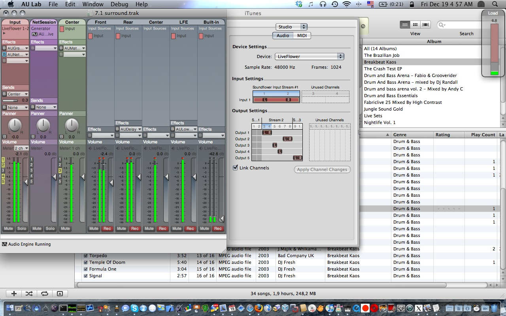

Playing with Audio Units via AU Lab to gain 5.1 surround

The right session shows a document open on an aggregate audio device between soundflower (2ch) and a Creative SBLive with 6 channels: the flower receives sound input from iTunes and routes it to the card channels, using all the 6 speakers.
Effects have been added to improve the audio experience (details here: http://www.rottenbrains.com/?p=232). The right session also uses AUNetSend to stream audio onto the left session, connected to the built-in speakers of the macbook.
Result: stereo audio being played on eight channels. Audio Units are a really powerful instrument, well coded and well working .
[ tks nextie for telling me about AUNetSend and AUNetReceive ]
UPDATE 19-12-2008

Improving: there is no need to use NetSend and NetReceive to play on 8 speakers: an aggregate device composed of Soundflower 2ch, the USB 6ch SBlive and the Built-in output is enough!
Also, note the new bus: it’s required because the AUMatrixReverb effect added to the center channel to improve the audio stereophony actually takes two channels, so it overlaps with the following one (the LFE). But applying the effect to a bus does not exhibit this side effect.
Result: excellent 7.1


About this entry
You’re currently reading “Playing with Audio Units via AU Lab to gain 5.1 surround”, an entry on sindro.me
- Published:
- 12.12.08 / 03AM
- Updated:
- 02.21.09 / 01AM
- Sections:
- number 42
- Tags:

0 comments